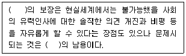
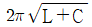
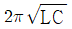
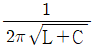
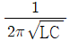
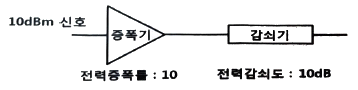
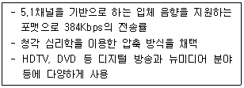
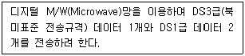
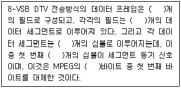
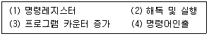

방송통신기사 (2023-03-21 기출문제)
1과목: 방송통신일반
1. 뉴미디어가 보급되었을 때 이를 이용할 수 있는 계층과 그렇지 못한 계층 간의 간격이 커짐을 지적한 가설은?
- 정보격차가설
- 의제설정가설
- 제한효과가설
- 탄환이론
(정답률: 92%)
2. FM 대역에서 디지털 라디오방송을 위한 주요 전송방식의 종류가 아닌 것은?
- DRM
- IBOC
- Eureka-147
- DVB-T
(정답률: 73%)
3. 파장별 단색광이 모두 같은 에너지를 가진다 해도, 눈이 같은 밝기로 느끼지 않는 현상은?
- 명암의 순응도 특성
- 색순응도 특성
- 시감도 특성
- 비시감도 특성
(정답률: 66%)
4. HDTVm DMB 등 디지털방송에 사용하는 영상 압축방식이 아닌 것은?
- AC-3
- H.264
- MPEG-4
- MPEG-2
(정답률: 77%)
5. 다음 중 인간의 눈에 의해 지각되는 빛의 단위시간당 에너지인 광속의 단위는?
- 루멘(lumen)
- 칸델라(candela)
- 룩스(lux)
- 니츠(nits)
(정답률: 80%)
6. 인물 조명에 대한 설명으로 틀린 것은?
- 베이스 라이트 : 인물, 배경을 포함하여 전체에 균등한 밝기를 주는 확산 조명
- 필 라이트 : 키 라이트에 의해 생기는 어두운 부분을 수정하기 위한 조명
- 터치 라이트 : 수평선이나 배경의 세트에 액센트를 만들기 위한 조명
- 풋 라이트 : 인물의 정면 위쪽으로부터의 조명
(정답률: 86%)
7. FM 라디오 방송 88~108[MHz]의 주파수대역에서 주파수 편이량이 72[kHz]일 때 FM 방송의 변조지수는? (단, 신호파 주파수는 4[kHz]로 가정한다.)
- 10
- 15
- 18
- 20
(정답률: 85%)

8. 위성 방송에서 전계 방향이 시간에 따라 회전하는 편파는?
- 수직편파
- 수평편파
- 원편파
- 사각편파
(정답률: 78%)
9. 다음 중 위성방송의 특징으로 옳지 않은 것은?
- 위성으로부터 직접 전파를 수신하기 때문에 화질의 열화가 적다.
- 산간벽지, 외딴 섬 등에서도 선명한 방송의 수신이 가능하다.
- 위성을 중계매체로 하기 때문에 비상시 전국적인 방송이 불가능하다.
- 양질의 영상과 음성 수신이 가능하다.
(정답률: 88%)
10. 주파수가 3[Hz]인 신호를 FM 변조하여 변조된 신호의 최소 주파수와 최대 주파수가 각각 1[kHz]이고 4[kHz]인 경우 카슨 법칙(Carson's rule)에 따른 대역폭[Hz]은 얼마인가?
- 2,002
- 3,003
- 4,004
- 6,006
(정답률: 75%)
11. 인터넷 멀티미디어 방송에서 “프로토콜(Protocol)”에 관한 설명으로 옳은 것은?
- OSI(Open System Interconnection) 모델의 제3계층(네트워크층)에 해당되는 프로토콜로 패킷의 전송·경로제어를 위한 규약이다.
- 인터넷 멀티미디어 방송 콘텐츠의 시청 권한을 부여받은 사용자만이 이용할 수 있도록 제한함을 의미한다.
- 정보기기 상호간의 접속이나 절단방식, 통신방식, 주고받을 자료의 형식, 오류검출방식, 코드변환방식, 전송속도 등 여러 가지 통신규칙과 방법에 대해 약속한 통신규약이다.
- 인터넷상에서 특정 다수에게 동일한 데이터를 전송할 수 있는 방식으로써 인터넷멀티미디어 방송 제공을 희망하는 이용자에게 선별적으로 전송하는 방식이다.
(정답률: 79%)
12. 디지털방송 기술의 방식별 전송방식과 변조방식이 옳지 않은 것은?
- ATSC3.0 : OFDM과 16QAM
- DVB-H : VSB와 QPSK
- T-DMB : OFDM과 DQPSK
- MediaFLO : OFDM과 QPSK
(정답률: 66%)
13. EPG(Electronic Program Guide)에 대한 설명으로 옳지 않은 것은?
- 단순히 채널번호 또는 채널의 업/다운 기능만을 제공한다.
- 각 채널별 프로그램의 요약 및 일정표를 만들기 위해 셋톱 박스와 함께 사용되는 응용 프로그램이다.
- 채널별, 장르별로 다양한 표시가 가능하여 시청자가 손쉽게 원하는 프로그램을 찾도록 지원한다.
- EPG 서비스는 인터넷의 포털사이트와 같은 기능이다.
(정답률: 81%)
14. CATV 시스템 중 헤드엔드 설비에 속하지 않는 것은?
- 위상방송 재송신시설
- 자체방송시설
- 중계시설
- 모니터 및 제어시설
(정답률: 67%)
15. 디지털 케이블방송의 신호 압축방식이 아닌 것은?
- MPEG-2
- MPEG-4
- AC-3
- H.263
(정답률: 73%)
16. 다음 중 괄호 안에 알맞은 단어는 무엇인가?

- 인터넷
- 자유성
- 사회성
- 익명성
(정답률: 89%)
17. 다음 중 Digital Audio 시스템에 대한 설명으로 잘못된 것은?
- MPEG-2 AAC 포맷은 기본적으로 데이터양을 줄이기 위해 인간 청각의 신호 마스킹 성질을 이용한다.
- AC-3에서 다채널 전송용으로 압축률을 높이기 위해 채널 커플링 방법을 흔히 사용한다.
- Dolby사에 의해 개발된 다채널 전송용 Audio 코딩기술은 Dolby-C type이다.
- 디지털 Audio System 에서 Master와 Slave 장비간 Sync가 반드시 동일하게 제공되어야 한다.
(정답률: 72%)
18. 음성신호 표본화주파수가 48[kHz], 2ch 방식, 16비트 양자화인 경우 전송률은 몇 [Mbps] 인가?
- 1.236
- 1.336
- 1.456
- 1.536
(정답률: 74%)
19. 다음 중 소셜미디어가 매스미디어에 비해 우위를 점하고 있다고 보기 어려운 것은 어느 것인가?
- 사회적 관계
- 정보의 공유
- 인맥 형성
- 대량의 메시지 전달
(정답률: 73%)
20. 종합유선방송 사업자 별 시설에서 방송사업자(SO)의 설비가 아닌 것은?
- 중계방송 설비
- 제작, 편집 설비
- 프로그램수신 설비
- 분배센터 설비
(정답률: 60%)
2과목: 방송통신기기
21. 커패시턴스가 C[F]인 커패시터(capacitor)와 인덕턴스가 L[H]인 인덕터(inductor)가 병렬로 연결되는 LC 발진회로에서 공진 주파수 값은? (단, 발진회로에서의 에너지 손실은 없다.)




(정답률: 65%)
22. 다음 방송의 형태 분류 중 주파수에 따른 분류가 아닌 것은?
- 무선 방송
- 극초단파 방송
- 초단파 방송
- 중파 방송
(정답률: 80%)
23. 전력 증폭률이 10인 증폭기의 입력에 10[dBm]의 전력이 입력되고, 증폭기를 통해 증폭된 신호가 10[dB]의 감쇠도를 갖는 감쇠기를 통과하게 되면 최종 출력신호의 전력[mW]은?

- 0.1
- 1
- 10
- 100
(정답률: 75%)
24. 동시에 소리가 들릴 때 큰 소리가 잘 들리고 작은 소리는 들리지 않으며, 낮은 진동수 소리는 잘 들리나 높은 진동수의 소리는 잘 들리지 않는 것은?
- 마스킹 효과
- 칵테일 효과
- 홀 효과
- 나비 효과
(정답률: 77%)
25. 동영상, 이미지, 문서 등 디지털 자산의 생성부터 수정, 보관, 배표, 폐기에 이르는 디지털 자산의 생명 주기(life cycle) 전체를 관리하는 시스템은?
- NPS(Network Production System)
- MAM(Media Asset Management)
- ITS(Intelligent Transport System)
- VCR(Video Cassette Recorder)
(정답률: 70%)
26. 다음 중 스마트폰을 이용한 모바일 스트리밍 라이브방송을 하는 경우 스마트폰에서 수행하는 기능에 포함되지 않는 것은?
- 스트리밍
- 네트워킹
- 영상입력
- SDI
(정답률: 78%)
27. 다음 문장에서 설명하는 포맷의 용어는?

- AC3
- MP3
- WMA
- MP2
(정답률: 78%)
28. FM 수신기에서 AFC 회로의 주요 기능은?
- 수신감도 향상
- 선택도 향상
- 감도 조정
- 주파수 안정도 향상
(정답률: 69%)
29. 다음 중 지상파 방송용 콤바이너(Combiner)의 종류가 아닌 것은?
- Hybrid 방식
- Star Point 방식
- BAnd Pass Filter 방식
- Wave-guide Directional 방식
(정답률: 65%)
30. 반송파대 잡음비(C/N)가 10dB 이상이어야 하는 위성방송에서 잡음 전력이 1[W]인 경우 반송파 전력은 몇 와트[Watt] 이상이어야 하는가?
- 1
- 10
- 20
- 40
(정답률: 65%)
31. 인터넷 비즈니스를 위한 모델의 설명으로 맞지 않는 것은?
- B2C : 비즈니스의 대상을 일반 소비자로 한다.
- B2B : 기업 간의 영리를 목적으로 한다.
- C2C : 일반 소비자간의 상업 행위를 목적으로 한다.
- O2C : 공공단체와 기업 간의 정보를 교류한다.
(정답률: 73%)
32. 상이한 네트워크, 해상도, 프로세서 성능, 사용자 인터페이스 등에서 공통으로 사용될 수 있도록 콘텐츠 변환 기능을 제공하는 것은?
- CMS(Content Management System)
- 트랜스코딩(Transcoding)
- CDN(Content Delivery Network)
- 인제스트(Ingest)
(정답률: 67%)
33. 다음 중 디지털 비디오 신호의 아이패턴이 불량하게 되는 원인이 아닌 것은?
- 강우 감쇠
- 잡음의 혼입
- 임피던스의 정합
- 디지털 장비의 Clock 주파수의 불안정
(정답률: 64%)
34. 스펙트럼 분석기로 측정할 수 없는 것은?
- 신호의 주파수 및 레벨
- 잡음 전력 및 C/N 비
- 색도의 신호 레벨
- 주파수 대역폭
(정답률: 66%)
35. 지상파 DMB에 적용된 동영상 압축규격으로 MPEG-2보다 압축효율이 2배 이상 뛰어나고 국제표준화기구(ISO) 산하 동영상전문가그룹 MPEG과 국제전기통신연합(ITU)의 전기통신 표준화 부문(ITU-T)에서 승인한 동영상 압축규격은?
- MPEG-4 BIFS
- H.264
- MPEG-4 BSAC
- AAC
(정답률: 68%)
36. 카메라에서 F값(F-number)이 클수록 나타나는 현상은?
- 빛의 양은 적게 들어오고 심도는 깊어진다.
- 빛의 양은 적게 들어오고 심도는 얇아진다.
- 빛의 양은 많이 들어오고 심도는 깊어진다.
- 빛의 양은 많이 들어오고 심도는 앏아진다.
(정답률: 67%)
37. QPSK 변조 방식에서 변조된 신호의 심볼(symbol) 당 전송되는 비트 수는?
- 2
- 4
- 8
- 16
(정답률: 60%)
38. 방송음향기기의 모니터 기능을 설명하는 것 중 맞지 않은 것은?
- VU(Volume unit)미터는 –20~+3[dB]범위의 눈금으로 구성되며 4[VU]는 신호강도 100%를 의미한다.
- Peak meter는 상승 응답속도가 매우 빠르고 상대적으로 하강속도는 느려서 신호의 피크레벨을 정확히 지시할 수 있다.
- 위상미터(Phase meter)에 표시되는 위상각은 두 입력신호(X축과 Y축 각 입력)의 크기에 변한다.
- Peak meter는 음의 찌그러짐 방지 및 기기보호에 적절히 활용될 수 있다.
(정답률: 60%)
39. 다음 중 위성 방송용 파라볼라 안테나에서 수신 전파의 주파수대는 12[Ghz], 안테나의 직경은 1[m], 안테나의 개구효일이 0.64라고 할 때 이득은 약 몇 [dB] 인가?
- 20[dB]
- 30[dB]
- 40[dB]
- 50[dB]
(정답률: 55%)
40. HFC(Hybrid Fiber Coaxial)에 대한 설명으로 옳은 것은?
- 광 케이블로 구성된 유선 방송망을 말한다.
- 방송국에서 가입자까지의 선로는 동축케이블로 연결된다.
- 광케이블과 동축케이블의 혼합된 선로를 말한다.
- 광분배점에서 가입자 댁까지 광케이블을 사용한다.
(정답률: 77%)
3과목: 방송미디어공학
41. 단위 면적당 압력으로 측정된 음압세기가 기준음압의 2배일 때 음압레벨은?
- 12[dB]
- 9[dB]
- 6[dB]
- 3[dB]
(정답률: 70%)
42. 디지털 신호 처리 체계에서 원신호와 샘플링 주파수와의 관계는? (단, fs : 샘플링주파수, fmax : 원시호의 최대주파수)
- fs ＜ fmax
- fs = fmax
- fs ＞ fmax
- fs ≥ fmax
(정답률: 65%)
43. 다음 중 긴급재난방송의 유형으로 틀린 것은?
- 환경단체의 신고로 인한 환경공해 및 수질오염에 대한 보도
- 전시나 제3국으로부터의 공격 등 이에 준하는 긴급 사태 발생시
- 대형 사건이나 사고 등에 의한 재난발생시
- 급성전염병이나 신종인플루엔자 등 전염병의 급속한 전파 내지는 확산에 따른 인명피해 우려시
(정답률: 78%)
44. 오디오믹서는 일반적으로 0[VU]를 몇 [dBm/600Ω]으로 설정하고 있는가?
- 4[dBm/600Ω]
- 3[dBm/600Ω]
- 2[dBm/600Ω]
- 1[dBm/600Ω]
(정답률: 55%)
45. 다음 중 지상파 디지털 라디오 방식이 아닌 것은?
- DRM
- DAB
- HD-Radio
- UHD방송
(정답률: 62%)
46. 다음 중 압축표준인 MPEG-1과 MPEG-2의 차이점에 대한 설명이 잘못된 것은?
- MPEG-2에서는 4:2:0은 물론 4:2:2 와 4:4:4를 취급할 수 있다.
- MPEG-2는 순차주사 뿐만 아니라 비월주사도 취급한다.
- MPEG-2는 MPEG-1의 부호화 비트열 규칙 중에서 일부분만 포함한다.
- MPEG-2는 프레임뿐만 아니라 필드 부호화를 제공한다.
(정답률: 55%)
47. 프레임간 복호를 위한 기준 프레임으로, 프레임간 예측을 쓰지 않고 해당 화면만 부호화 되는 화면은?
- I 프레임
- P 프레임
- R 프레임
- B 프레임
(정답률: 62%)
48. 다음의 MPEG 규격 중 인터넷 유선망과 이동통신망 등 낮은 전송률로 동화상을 보내고자 개발된 데이터 압축과 복원기술에 대한 압축방법은?
- MPEG-2
- MPEG-4
- MPEG-7
- MPEG-21
(정답률: 47%)
49. 다음 중 우리나라의 지상파 DMB 기술의 기반이 된 기술표준은?
- Eureka-147
- ISDB-TSB
- DRM
- IBOC
(정답률: 65%)
50. 다음 중 MPEG-7에 대한 설명으로 옳은 것은?
- 축적 미디어, 방송, 통신까지 범용으로 사용한다.
- HDTV의 부호화를 위하여 개발되어진 방식이다.
- 저속의 전송매체에 사용을 목적으로 개발된 방식이다.
- 콘텐츠 검색을 위한 기술들을 제공하는 것을 목적으로 한다.
(정답률: 62%)
51. 다음 중 3DTV(입체영상 TV)에 대한 설명이 틀린 것은?
- 3D 영상은 2D 영상과 달리 생동감 및 현실감을 느낄 수 있는 영상이다.
- 시청하기 위하여 입체영상 감상용 안경과 같은 장치가 필요하다.
- 3DTV 시스템 구성요소는 콘텐츠 생성, 코딩, 전송, 디스플레이 등으로 이루어졌다.
- 현재의 HDTV보다 화질이 4배 정도 더 선명하며 향후 5G 서비스 등과 결합될 것으로 예측된다.
(정답률: 73%)
52. 국내 케이블 TV 유선방송의 전송망 시스템은?
- HFC방식
- RING방식
- MMD방식
- LMDS방식
(정답률: 68%)
53. 콘텐츠 보안의 목표 달성을 위해 유지해야 하는 요소가 아닌 것은?
- 확장성
- 무결성
- 기밀성
- 가용성
(정답률: 67%)
54. 디지털 미디어의 불법 또는 비인가 된 사용을 제한하기 위하여 저작권 소유자나 판권 소유자가 이용하는 정보 보호 기술은?
- CAS
- DRM
- VOD
- PPV
(정답률: 59%)
55. 두 개 또는 그 이상의 정보신호를 하나의 신호로 만든 후 동시에 전송하는 것을 무엇이라고 하는가?
- 양자화
- 부호화
- 고속화
- 다중화
(정답률: 72%)
56. 실감미디어 방송의 하나의 형태로 두 개의 레이저 광이 서로 만나서 일으키는 빛의 간섭 현상을 이용하여 입체 정보를 기록하고 콘텐츠를 입체적으로 재생할 수 있는 기술은?
- 홀로그램
- 증강현실
- 가상현실
- 혼합현실
(정답률: 76%)
57. 다음 중 멀티미디어 데이터를 활용한 대화형 텔레비전시스템을 구성하기 위하여 가정의 텔레비전에 부착하는 장치는?
- 셋톱박스
- 미디어 서버
- 지역 통합 노드
- 트랜스포트 네트워크
(정답률: 78%)
58. SNS와 스마트폰이 결합된 새로운 소통 방식인 소셜 미디어의 특징으로 옳지 않은 것은?
- 유무선 인터넷의 통합으로 소통의 접근성이 강화되었다.
- 이용자가 급증하여 정보 공유의 공간이 확장되었다.
- 언제 어디서나 개방과 참여를 통한 상호작용이 가능하다.
- 스마트폰과 SNS 사용자의 개인 정보 보안성은 심각하지 않다.
(정답률: 79%)
59. 반사음이 전혀 없는 자유음장에서 음원으로 부터의 거리가 두배가 되는 지점에서의 음압은 얼마나 낮아질까?
- 3[dB]
- 6[dB]
- 9[dB]
- 12[dB]
(정답률: 70%)
60. 소셜미디어의 순기능으로 볼 수 없는 것은?
- 빠른 정보 수집
- 영향력과 여론 형성
- 개인의 콘텐츠 생산 및 배포
- 정보의 신뢰도 상승
(정답률: 75%)
4과목: 방송통신시스템
61. 다음과 같은 조건에서 전체 전송량은?

- 44.736[Mbps]
- 46.286[Mbps]
- 49.368[Mbps]
- 47.824[Mbps]
(정답률: 47%)
62. 다음 중 변조의 필요성과 관계가 먼 것은?
- 안테나 크기의 소형화
- 하나의 통신로에 여러 신호의 동시 전송
- 장비의 소형화
- 출력의 증대
(정답률: 66%)
63. AM 방송에 관한 설명 중 옳은 것은?
- 중파 대역의 지표파로 FM보다 높은 주파수를 사용한다.
- 송신용 안테나로 파라볼라 안테나를 사용한다.
- 레벨변동의 영향을 받지 않는다.
- 포락선 검파회로가 사용된다.
(정답률: 63%)
64. 아래 빈칸에 들어갈 숫자가 순서대로 적절히 배열된 것은?

- 2, 313, 832, 4, 188
- 4, 188, 313, 2, 832
- 2, 188, 832, 2, 313
- 188, 2, 313, 4, 832
(정답률: 50%)
65. 인터넷 멀티미디어 방송 제공사업자 설비와 가입자 단말장치의 음성신호 압축 및 복호화 형식은?
- ISO/IEC 13818-7 Advanced Audio Coding(AAC) 및 AC-3
- MPEG-1 Layer Ⅰ
- MPEG-1 Layer Ⅱ
- MPEG-2 Layer Ⅰ
(정답률: 68%)
66. 다음 중 FM 수신기의 보조회로가 아닌 것은?
- 진폭제한기
- 디엠퍼시스회로
- 스켈치 회로
- IDC 회로
(정답률: 57%)
67. IPTV 시스템의 구성요소 중 실시간 채널에 대한 암호화 및 VoD 콘텐츠의 사전 암호화를 수행하며 시청권한을 제어함으로써 인증된 사용자에 한해 채널 및 콘텐츠를 이용할 수 있도록 하는 시스템은?
- T-Commerce
- CAS(Conditional Access System)
- CMS(Cintents Management System)
- VoD 시스템
(정답률: 61%)
68. 다음 국내에서 방송 중인 위성방송의 오디오 압축규격은?
- BSAC
- AAC
- MPEG-4
- MPEG-2
(정답률: 44%)
69. 다음 중 지상파 DMB에서 사용하는 멀티캐리어 OFDM 변조방식의 특성이 아닌 것은?
- 다중경로 페이딩에 강하다.
- 주파수 이용효율이 우수하다.
- 무선채널에서 고속전송이 가능하다.
- 유럽식 DVB-T 및 미국식 ATSC DTV에서 사용된다.
(정답률: 64%)
70. AM송신기의 구성요소가 아닌 것은?
- 완충증폭기
- 주파수 체배기
- 여진 증폭기
- 프리앰퍼시스
(정답률: 65%)
71. 다음 중 영상 제작장비의 특성을 측정하는 장비가 아닌 것은?
- 파형측정기(Waveform Monitor)
- 벡터스코프(Vector Scope)
- 신호발생기(Signal Generator)
- 스펙트럼 분석기(Spectrum Analyzer)
(정답률: 58%)
72. 인터넷상에서 대용량의 음성이나 영상 파일을 압축한 후, 여러 개의 조각으로 나눠서 전송하는 기술은?
- Push 기술
- Streaming 기술
- Anycast 기술
- Multicast 기술
(정답률: 70%)
73. 디지털 자산에 대한 획득, 제작, 편집, 배포가 유기적으로 이루어질 수 있도록 디지털 자산을 관리하는 시스템을 의미하는 용어가 아닌 것은?
- MAM(Media Asset Management System)
- DAM(Digital Asset Management System)
- CMS(Contents Management System)
- NPS(Network Production System)
(정답률: 58%)
74. 다음 중 주파수변조에서 최대주파수편이가 75[kHz]와 최대변조신호의 주파수가 15[kHz]일 경우에 FM 주파수의 대역폭으로 옳은 것은?
- 15[kHz]
- 75[kHz]
- 150[kHz]
- 180[kHz]
(정답률: 66%)
75. 안테나의 이득을 절대이득(dBi)과 상대이득(dBd)으로 구분해 볼 수 있는데, 이중 상대이득이 5.5[dBd]인 경우 절대이득은 몇 [dBi] 인가?
- 7.65[dBi]
- 8.55[dBi]
- 9.15[dBi]
- 11.22[dBi]
(정답률: 64%)
76. 다음 중 통신용접지의 접지선에 대한 설명이 잘못된 것은?
- 접지선의 종류 및 크기는 설계도면에 따른다.
- 전선색상은 검정색을 사용하여야 한다.
- 접지단자함에서 접지극에 이르는 전선은 접지용 비닐전선(GV)을 사용한다.
- 배선은 배선공사 섹션에 따른다.
(정답률: 66%)
77. 다음 중 통신/방송위성에 사용하는 Ku Band 주파수대는?
- 8[GHz]-1.25[GHz]
- 12.5[GHz]-18[GHz]
- 18[GHz]-26.5[GHz]
- 26.5[GHz]-40[GHz]
(정답률: 64%)
78. 유선방송국설비는 매월 방송신호를 측정·시험하여 그 결과를 기록·관리하여야 하는데, 그 항목에 해당되지 않은 것은?
- 반송파의 주파수 편차
- 전원 험 변조도
- 혼 변조도
- 전계강도
(정답률: 56%)
79. 다음 중 영상신호를 분리하는 장치인 분기기와 분배기의 차이점에 대한 설명으로 옳은 것은?
- 분기기는 입력신호를 불균등하게 분리하고 분배기는 균등하게 분리하는 것이다.
- 분기기는 입력신호를 균등하게 분리하고 분배기는 불균등하게 분리하는 것이다.
- 분기기는 입력신호를 증폭하지 않고 분리하고 분배기는 증폭하여 분리하는 것이다.
- 분기기는 입력신호를 증폭하여 분리하고 분배기는 증폭하지 않고 분리하는 것이다.
(정답률: 67%)
80. 다음 중 쌍곡면 반사면을 이용하여 두 번의 반사로 수신된 신호를 초점에 모아주는 위상 안테나는?
- 접시형 안테나
- 그레고리 안테나
- 평면 안테나
- 카세그레인 안테나
(정답률: 59%)
5과목: 컴퓨터일반 및 방송설비기준
81. 텔레비전 수신료를 면제받을 수 있는 경우가 아닌 것은?
- 「국민기초생활보장법」에 의한 생계급여의 수급자가 소지한 수상기
- 영업을 목적으로 설치한 수상기 중 1개월 이상의 휴업으로 시청하지 않는 수상기
- 주거전용의 주택용 전력사용량이 월 100킬로와트 미만인 세대가 소지한 수상기
- 「장애인복지법」에 따라 등록된 시각·청각 장애인이 생활하는 가정의 수상기
(정답률: 69%)
82. 중계유선방송 및 음악유선방송설비와 수신자설비의 분계점을 정확하게 표현한 것은?
- 도로와 택지 또는 공동주택단지의 각 단지와의 경계점
- 행정구역의 실선에 따라 각각 동별로 정한 경계점
- 간선도로와 하천 또는 행정구역이 동으로 정한 경계점
- 국도와 간선도로 또는 대단위 주택단지와의 경계점
(정답률: 66%)
83. 종합유선방송국 설비의 기술적 조건에 대한 사항 중 틀린 것은?
- 종합유선방송국이 사용할 수 있는 대역내 주파수 대역은 5.75[MHz]부터 1,002[MHz]이다.
- 영상신호의 휘도신호와 색차신호의 표본당 비트수는 4비트로 한다.
- 디지털채널의 변조방식 및 전송조건 등은 「디지털 유선방송 송수신 정합」 표준을 따른다.
- 아날로그 종합유선방송국의 주 전송장치의 전송방식은 진폭변조방식으로 한다.
(정답률: 54%)
84. 디지털 텔레비전 방송프로그램의 표준 음량은 평균 음량을 몇 LKFS로 하며, 운용상의 허용오차 범위는? (단, 클래식, 국악 등 전문 음악프로그램을 생방송으로 제공하는 경우에는 이 음량기준을 적용하지 아니한다.)
- -20, ±1dB 이내
- -22, ±1dB 이내
- -24, ±2dB 이내
- -26, ±2dB 이내
(정답률: 60%)
85. 공사를 설계한 용역업자는 그가 작성 또는 제공한 실시 설계도서를 해당 공사가 준공된 후 보관기간은?
- 3년
- 4년
- 5년
- 6년
(정답률: 74%)
86. 디지털 종합유선방송국에 사용되는 ATSC 8-VSB 변조기의 출력레벨 기준값은?
- 50±5 [dBmV]
- 50±10 [dBmV]
- 75±5 [dBmV]
- 75±10 [dBmV]
(정답률: 47%)
87. 종합유선방송용 변조기의 특성 중 진폭변조기의 입력특성으로 기준값이 잘못된 것은?
- 영상신호 입력레벨 : 140±4[IRE]
- 영상신호 임피던스 : 75[Ω]
- 음성신호 입력레벨 : 0±10[dBm]
- 음성신호 임피던스 : 600±30[Ω]
(정답률: 52%)
88. C클래스 IP주소를 할당받는 기업에서 팀별로 네트워크를 나누어 사용하려고 한다. 한 팀에 16개의 서브넷 ID를 원할 경우 이 기업의 서브넷 마스크는 무엇인가?
- 255.255.255.0
- 255.255.255.128
- 255.255.255.192
- 255.255.255.240
(정답률: 61%)
89. 데이터 정제에서 영향 분석 및 수정을 위해 오류를 개발자에게 할당한 상태를 나타내는 용어는?
- Fixed
- Assigned
- Deferred
- Classified
(정답률: 60%)
90. 서비스 커버리지 범위가 가장 작은 네트워크는 무엇인가?
- LAN(Local Area Network)
- MAN(Metropolitan Area Network)
- WAN(Wide Area Network)
- PAN(Personal Area Network)
(정답률: 74%)
91. 이진수 10010011과 10100001을 논리합(OR)으로 맞게 변환한 값은?
- 00110010
- 10110011
- 10000001
- 10000100
(정답률: 68%)
92. C Class에 해당하는 유효한 IP주소는 무엇인가?
- 190.77.88.53
- 37.117.45.64
- 179.44.211.3
- 216.211.33.77
(정답률: 68%)
93. 다음 중 TCP/IP 계층과 보안 프로토콜의 연결이 틀린 것은?
- 전송 – SSL, TLS
- 어플리케이션 – PGP, SSH
- 인터넷 – IP Sec, L2F
- 네트워크 인터페이스 – PPTP, L2TP
(정답률: 50%)
94. 다음 중 기억 장치의 주소를 기억하는 제어 장치는?
- 프로그램 카운터(PC)
- 명령 레지스터(IR)
- 번지 레지스터(MAR)
- 기억 레지스터(MBR)
(정답률: 51%)
95. 클라우드 서비스를 이중화하기 위한 설계원칙이 아닌 것은?
- HDLC 프로토콜
- 단일장애점(SPOF) 제거
- 서비스 지속성 보장
- 결함 격리 반영
(정답률: 53%)
96. 다음 중 네트워크 가상화의 종류에 해당하지 않는 것은?
- 호스트 가상화
- 링크 가상화
- 광통신 가상화
- 라우터 가상화
(정답률: 65%)
97. 다음 보기의 내용은 마이크로프로세서의 동작을 나타낸 것이다. 순서가 올바른 것은?

- (3)-(4)-(1)-(2)
- (4)-(1)-(2)-(3)
- (3)-(1)-(4)-(2)
- (4)-(2)-(3)-(1)
(정답률: 63%)
98. 교육방송에 대한 수신료의 지원은 한국방송공사가 행하는 방송에 대한 송신지원에 소요되는 금액과는 별도로 매년 수신료 수입의 얼마를 지원해야 하는가?
- 100분의 2
- 100분의 3
- 100분의 4
- 100분의 5
(정답률: 53%)
99. 다음 중 방송통신설비의 관리 규정을 정하고 그 규정에 따라 방송통신설비를 관리해야 하는 사업자가 아닌 것은?
- 회선설비 보유사업자
- 지상파방송사업자
- 인터넷 멀티미디어 방송제공사업자
- 중계유선방송사업자
(정답률: 35%)
100. 지상파방송사업자(공동체라디오방송사업자는 제외)·종합유선방송사업자·위성방송사업자 또는 인터넷 멀티미디어 방송 제공사업자는 기술결합서비스를 제공하려할 경우 신고하여야 할 곳이 틀린 것은?
- 지상파방송사업자는 방송통신위원회에 신고
- 종합유선방송사업자는 과학기술정보통신부장관에게 신고
- 인터넷 멀티미디어 방송 제공사업자는 방송통신위원회에 신고
- 위성방송사업자는 과학기술정보통신부장관에게 신고
(정답률: 57%)
이므로 72kHz/4kHz=18